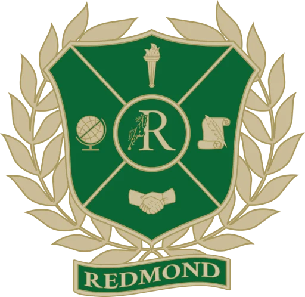
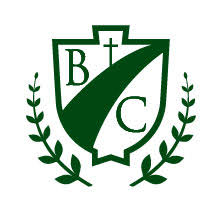
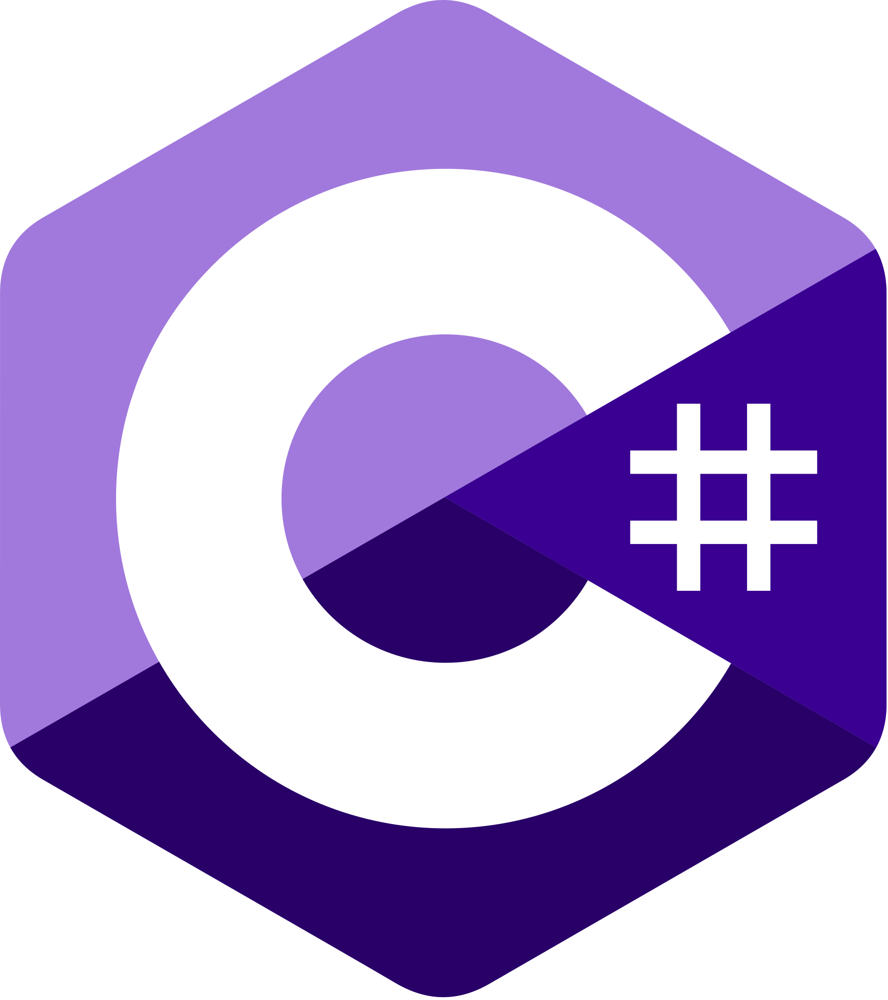
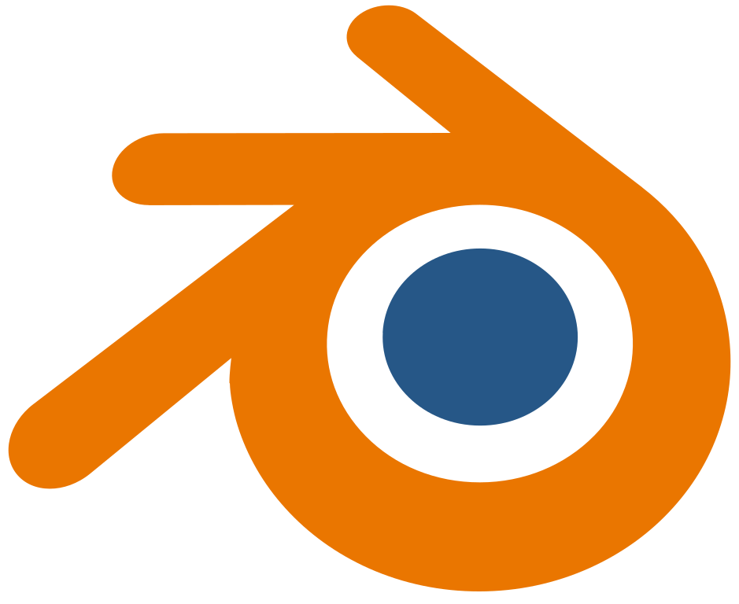
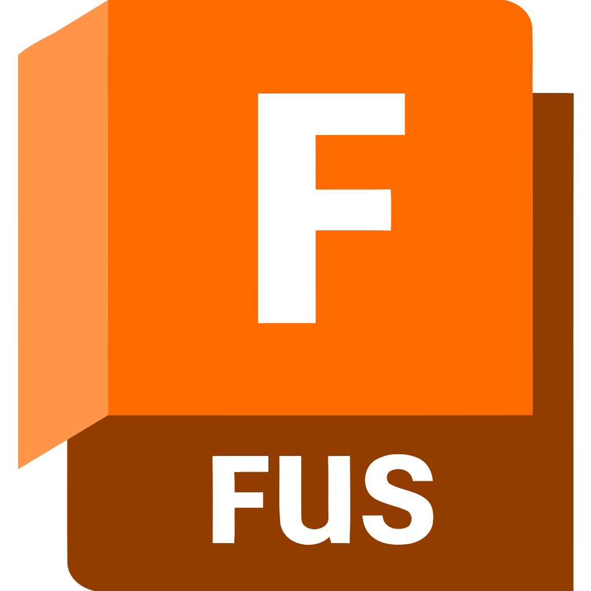

Hello!
My name is Ethan and I am a sophomore at Nikola Tesla STEM High School. I am interested in medicine, the intersection of computer hardware and software, mathematics, and engineering.
About me
I have a variety of technical and creative interests. I am skilled in programming, primarily in the languages C++ and Python. I also do 3D design and animation and love engineering and creating things. Alongside academics, I pursue music as an advanced pianist and violinist and swim competitively at my local swim team. In these interests and hobbies I have developed discipline and resilience that extends to my academic pursuits.
I am currently in a position as a software firmware engineer for Tesla STEM's SUAS team.
Education
Clubs and activities: Orchestra, Engineering Club, TSA, SUAS

Grade:
- 3.87 GPA (4.21 weighted) first semester
- 4.0 GPA (4.29 weighted) second semester
Courses
- Calculus I
- Honors English 9
- Honors World History
- Honors Biology
- AP Computer Science Principles
- Business and Marketing
- Intro to Engineering Design
Obtained strong GPA among highest difficulty of courses allowed to freshmen at RHS, including Calculus I, 3 honors classes, and one AP. Assigned groups for projects in Business and Marketing was suboptimal but I gained experience working with unique individuals.

Grade: 3.95 GPA
Clubs and activities:
- Worship Band (piano and violin)
- Band/Orchestra (violin)
- Cross Country
- Advanced Computer Programming Club
Courses
- Algebra II
- English
- Biology and Epidemiology
- Medieval Western Civilization
- Latin/Logic
- Honors Pre-Calculus
- English
- Earth Science and Engineering
- Modern Western Civilization
- Latin
I performed piano and violin at weekly chapel at school with an audience comprising the middle school division of several hundred students. I also completed the Geometry mathematics course during my sixth grade summer to advance to Algebra II in seventh grade.
I am thankful for my supportive classmates as well as the amazing team of teachers that made every day enjoyable at school!
Technology Skills and Frameworks

Python
Developed productivity apps with Tcl/Tk, scripts and tools of various uses, and games.

C++
Developed games, professional applications for real-world usage, and simulations.

C#
Developed Windows apps with WinUI3 and cross-platform apps with .NET MAUI.

Blender
Created cinematic-quality animations and renderings of various subjects.
Qt Framework
Developed health app and performance optimizer with Qt and QML with logic entirely in C++.
WinUI3
Developed modern photo viewing and metadata editing application similar to Microsoft's.
NVIDIA PhysX
Utilized GPU-accelerated physics with PhysX in simulations and benchmarks comparing other physics engines.
OpenGL
Developed compute and rendering shaders for games, such as particle effects, special lighting effects, and pyrotechnics.

Autodesk Maya
Created crowd simulations with ragdolls and projectiles.

Autodesk Fusion
Proficient in CAD modelling with Fusion 360.

Photoshop
Proficient in editing, retouching, and designing graphics and photos.
DirectX
Currently in progress of developing a rendering engine with DirectX 11.

Git
Utilized Git version control for nearly all programming projects.
Visual Studio
Proficient in Microsoft Visual Studio IDEs and Visual Studio Code.
LaTeX
Took all Calculus I and AP Calculus BC notes in LaTeX.
Test scores
CogAT Standard Age Score (Composite)
141Obtained score of 141 on Cognitive Abilities Test for Standard Age Score (SAS), roughly placing in the 99.5th percentile of test takers.
CogAT Age Percentile Ranking (Composite)
99Obtained score of 99 on the Cognative Abilities Test for Age Percentile Ranking (APR), placing in the 99th percentile of CogAT test takers.
AP Exam Scores
AP Computer Science Principles 5
Achieved 5 on AP Computer Science Principles AP exam. My Performance Task was an implementation of the popular word game Wordle. This is more complex than it appears due to edge cases and subtleties such as duplicate letters.
I pair programmed with Amogh Munikote for this project.